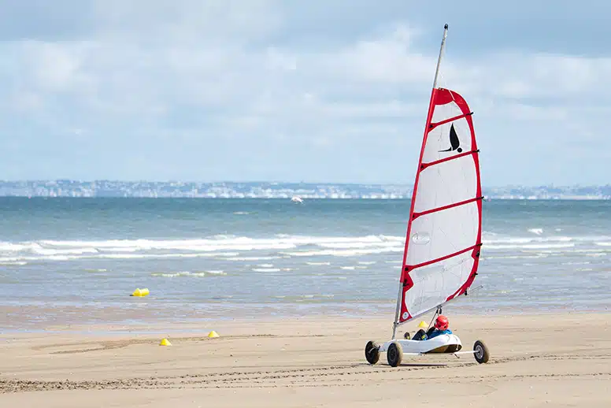
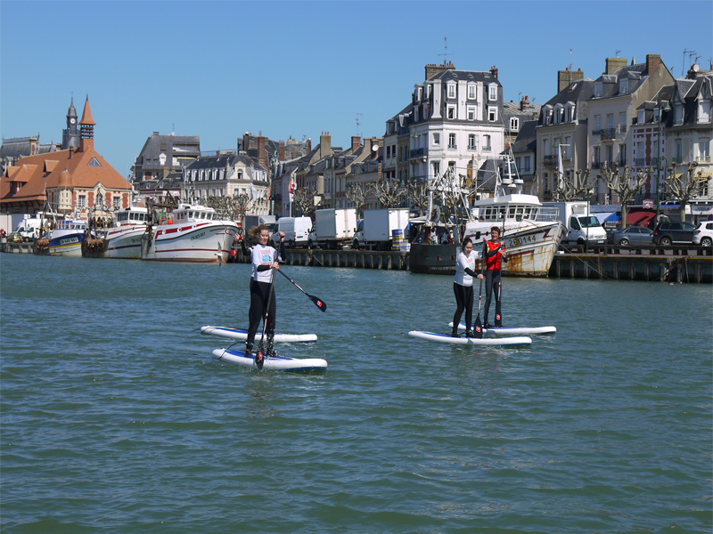
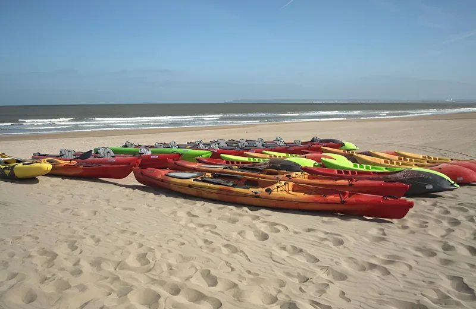
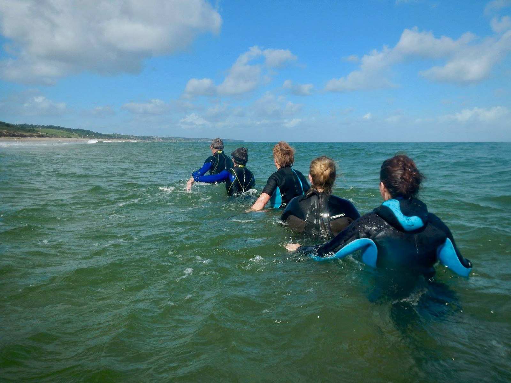

Avec ses grandes plages, ses ports et son littoral, la Côte Fleurie offre de nombreuses façons de profiter de la mer. Sur l’eau ou au bord de l’eau, les activités nautiques permettent de découvrir la côte à son rythme, entre balade, découverte et sensations.



